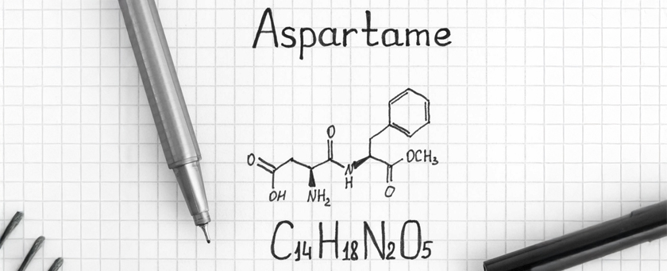

Aspartame Guide
Key facts about the popular sweetener.
Aspartame Overview
Aspartame is a low-calorie artificial sweetener around 200 times sweeter than sugar. It is commonly found in diet sodas, sugar-free desserts, and other low-calorie products. While approved by many health agencies, aspartame continues to be scrutinized for potential links to headaches, mood changes, and other health effects. This guide covers what aspartame is, where it's used, and how to choose safer alternatives.
Learn more in our detailed article What is Aspartame? or explore health risks and safer alternatives.
Frequently Asked Questions About Aspartame
- What is aspartame?
- Aspartame is a synthetic sweetener used in many sugar-free and "diet" products. It is approximately 200 times sweeter than sugar.
- Is aspartame safe?
- Regulatory agencies deem aspartame safe for most people, but some studies suggest potential side effects, prompting many to reduce or avoid it.
- Where is aspartame commonly found?
- Aspartame is often found in diet sodas, sugar-free gum, and low-calorie packaged foods.